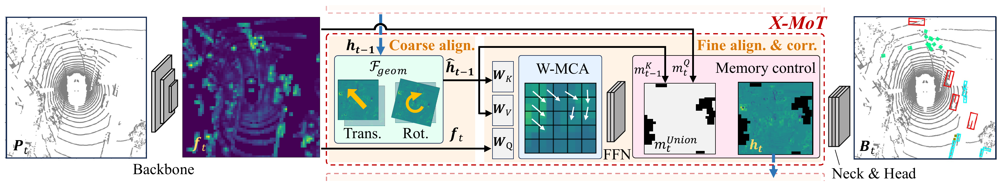
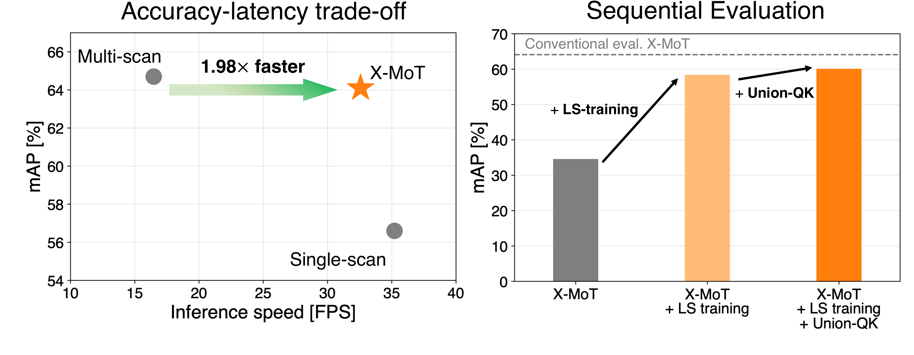

Abstract
We propose a scan-by-scan framework for LiDAR 3D object detection that eliminates redundant re-encoding of overlapping historical scans by propagating temporal context through internal memory. This formulation raises two fundamental challenges: inter-step feature misalignment and long-horizon degradation that conventional short-window evaluation can obscure. To address the former, we introduce Cross-Attention Motion Transformation (X-MoT), a motion-aware recurrent update module that aligns propagated memory with the current observation through coarse egomotion compensation followed by cross-attention-based refinement. To address the latter, we introduce sequential evaluation under continuous inference without state resets, and show that long-sequence training and Union-QK further improve robustness in this setting. Under conventional evaluation, X-MoT achieves a favorable accuracy-latency trade-off against multi-scan baselines. At the same time, sequential evaluation reveals substantial long-horizon degradation in memory-based detectors that is obscured by conventional evaluation. Taken together, these results show that scan-by-scan detection can deliver competitive accuracy at low latency, provided that its long-horizon behavior is explicitly evaluated and stabilized.
Cross-Attention Motion Transformation (X-MoT)

Our scan-by-scan detector processes one LiDAR scan at a time and carries temporal context forward in a BEV feature memory. For each scan, the backbone extracts the current BEV feature, while X-MoT updates the hidden feature propagated from the previous scan. X-MoT first coarsely aligns the memory to the current frame using egomotion, then applies window-based cross-attention to model local correspondence between the current feature and the propagated memory, refining residual misalignment caused by coarse BEV resolution and moving objects. Memory control filters the updated feature before it is passed to the detection head and propagated to the next scan.
Long-Horizon Sequential Inference
Conventional evaluation repeatedly resets recurrent states over short temporal windows, potentially masking failures that emerge only during prolonged inference. We therefore introduce sequential evaluation, which processes each sequence continuously without resetting the internal memory. Under this protocol, memory-based detectors exhibit substantial long-horizon degradation: detection accuracy drops, and predictions become less temporally consistent as inference proceeds.
To address this, we use two complementary strategies. Long-sequence (LS) training, based on TBPTT, exposes the detector to repeatedly updated memory states and reduces the mismatch between short-horizon training and continuous inference across recurrent detectors. Union-QK addresses a complementary issue arising from sparse LiDAR features by restricting the updated memory to regions supported by either the current observation or the egomotion-aligned previous memory. Together, they substantially improve long-horizon stability.
Results

Video
BibTeX
@article{tsuji2026xmot,
author = {Tsuji, Eisho and Hamaguchi, Ryuhei and Onishi, Masaki and Sakurada, Ken},
title = {Rethinking Temporal Feature Propagation for Efficient 3D Object Detection},
journal = {IEEE Robotics and Automation Letters},
year = {2026},
doi = {10.1109/LRA.2026.3734879},
}